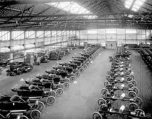

Fue un empresario y emprendedor estadounidense, fundador de la compañía Ford Motor Company y padre de las cadenas de producción modernas utilizadas para la producción en masa. La introducción del Ford T en el mercado automovilístico revolucionó el transporte y la industria en Estados Unidos.
Henry ha sido uno de los pilares en los que se ha basado la industria del automóvil. La figura de este norteamericano de ascendencia irlandesa estará siempre vinculada al mundo del motor, la producción en serie y los vehículos destinados al consumo masivo.
Debido a su gran apotación, tuvo el honor de ser conmemorado con dos grandes premios:
Además, el fordismo es el sistema de producción en cadena implementado por Henry Ford a partir del año 1908. Tras la fabricación del primer modelo (el Ford T) que fue un gran éxito de ventas por parte de la Ford Company, el empresario estadounidense decidió implementar en todas sus fábricas este sistema de producción.
He elegido a Henry Ford en el campo de la ingeniería porque es un personaje facil de identificar debido a la marca de coches FORD de la cual es fundador